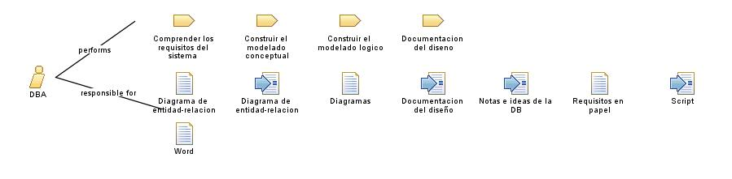

| Role: DBA |
 |
|
 |
||
| Primary Performs | ||
|---|---|---|
| Modifies |
|
|
El DBA realiza las siguientes tareas:
Comprender los requisitos del sistema |
| Skills | El DBA tiene algunas habilidades como:
|
|---|
El DBA:
Debe construir una DB de acuerdo a la arquitectura presentada |